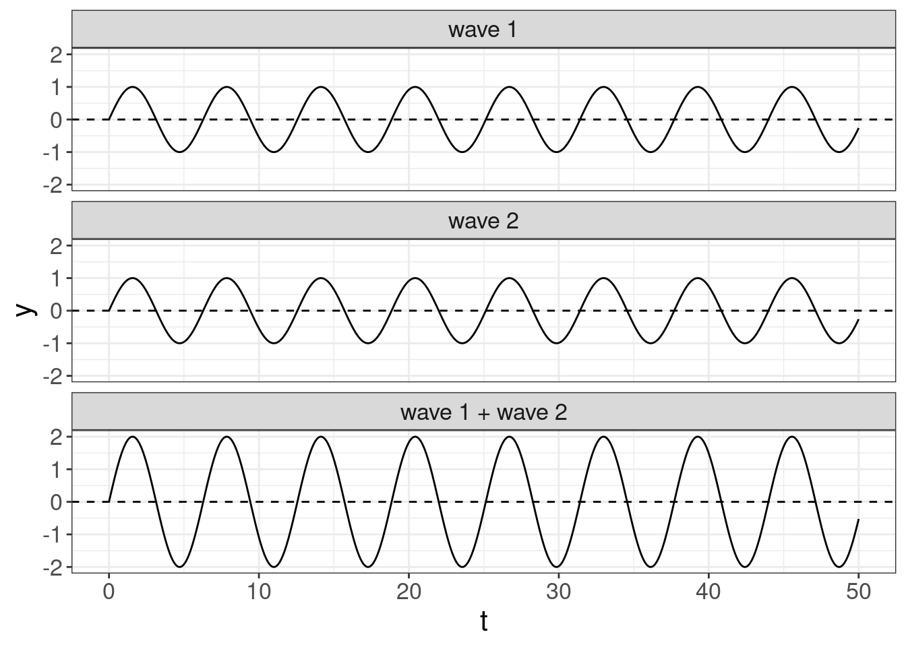
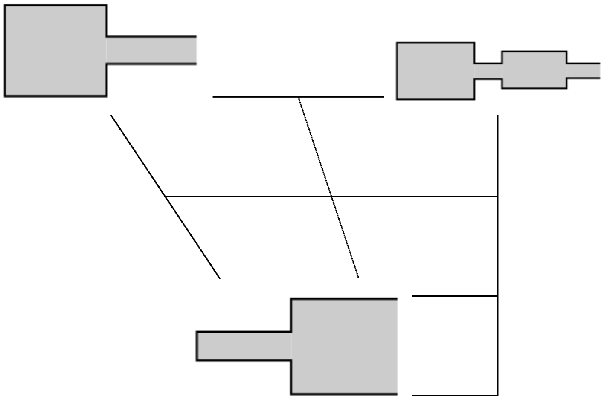
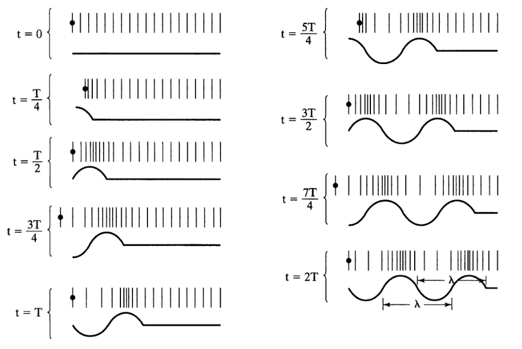
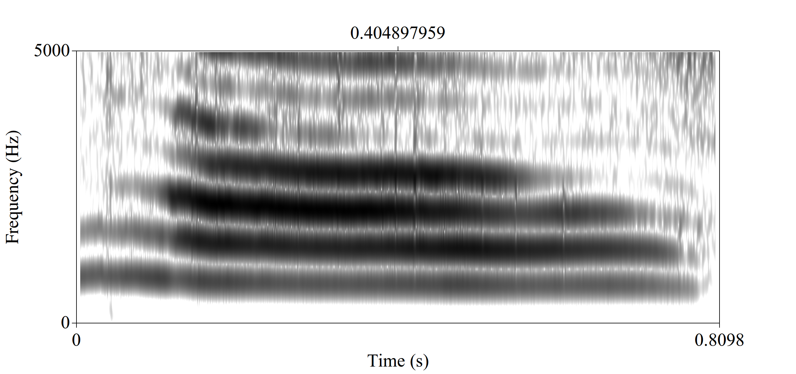

4 Vowels
4.1 Theory
4.1.1 Recap
- Sound waves can be described as
\[ s(t) = A \times \cos(2\pi ft + \phi) \]
A — amplitude;
f — is the fundamental frequency;
φ — phase;
t — time.
Speech sounds are complex waves
Fourier transform — allows to extract components of the complex wave

4.1.2 How shape of the vocal tract influences on vowels? Tube model.
Historically, height and backness are impressionistic linguistic terms:

But we are intersted just in a cardinal points:


If we analyze acoustics we can get something like this:

| i | a | u | |
|---|---|---|---|
| F1 | 300 | 700 | 300 |
| F2 | 2300 | 1400 | 800 |
However, if we analyze real sounds it could be messy:

Tube model, after (Fant 1970): vocal tract is a tube or a set of tubes:

4.1.3 Wavelength

\[c = \frac{\lambda}{T} = \lambda\times f \approx 33400\text{ cm/s}\]
- c — speed of sound;
- λ — wavelength;
- f — sound frequency;
- T — period.
Neutral vocal tract in the position for the vowel ə:

Resonance is a phenomenon in which a vibrating system or external force drives another system to oscillate with greater amplitude at specific frequencies. The lowest natural frequency at which such a tube resonates will have a wavelength (λ) four times the length of the tube (L).
\[c = \frac{\lambda}{T} = \lambda\times f \approx 33400\text{ cm/s}\]
The tube also resonates at odd multiples of that frequency.
\[F_1 = \frac{c}{\lambda} = \frac{c}{4 \times L} \approx 500 \text{ Hz}\] \[F_2 = \frac{c}{\lambda} = \frac{c}{\frac{4}{3} \times L} = \frac{3 \times c}{4 L} \approx 1500 \text{ Hz}\] \[F_3 = \frac{c}{\lambda} = \frac{c}{\frac{4}{5} \times L} = \frac{5 \times c}{4 L} \approx 2500 \text{ Hz}\] \[F_n = \frac{c}{\lambda} = \frac{c}{\frac{4}{n} \times L} = \frac{n \times c}{4 L} \approx n \times 500 \text{ Hz}\]
Something like this we can expect from animals:

When there is a constriction, back tube and constriction form Helmholtz resonator.
\[f = \frac{c}{2\pi} \times \sqrt{\frac{A}{V\times L}}\]
- A — the area of the neck;
- L — length of the tube;
- V — volume of the air in the body.

4.1.4 Other models
- Perturbation Theory [Kajiyama 1941, Mrayati et al. 1988]
- Quantal Theory (Stevens 1972)
- Theory of adaptive dispersion (Lindblom and Maddieson 1988)
4.2 Practice of the phonetic fieldwork with phonfieldwork
We will work with examples from Abaza and will try to end up with something like this:
4.2.1 Befor we start
I expect you
- to install
tidyverseandphonfieldwork:
install.packages(c("tidyverse", "rmarkdown", "phonfieldwork"))- load the library:
library(phonfieldwork)I will use the following version of the package:
packageVersion("phonfieldwork")## [1] '0.0.12'- download files for todays seminar:
4.2.2 Philosophy of the phonfieldwork package
Most phonetic research consists of the following steps:
- Formulate a research question. Think of what kind of data is necessary to answer this question, what is the appropriate amount of data, what kind of annotation you will do, what kind of statistical models and visualizations you will use, etc.
- Create a list of stimuli.
- Elicite list of stimuli from speakers who signed an Informed Consent statement, agreeing to participate in the experiment to be recorded on audio and/or video. Keep an eye on recording settings: sampling rate, resolution (bit), and number of channels should be the same across all recordings.
- Annotate the collected data.
- Extract the collected data.
- Create visualizations and evaluate your statistical models.
- Report your results.
- Publish your data.
The phonfieldwork package is created for helping with items 3, partially with 4, and 5 and 8.
To make the automatic annotation of data easier, I usually record each stimulus as a separate file. While recording, I carefully listen to my consultants to make sure that they are producing the kind of speech I want: three isolated pronunciations of the same stimulus, separated by a pause and contained in a carrier phrase. In case a speaker does not produce three clear repetitions, I ask them to repeat the task, so that as a result of my fieldwork session I will have:
- a collection of small soundfiles (video) with the same sampling rate, resolution (bit), and number of channels
- a list of succesful and unsuccesful attempts to produce a stimulus according to my requirements (usually I keep this list in a regular notebook)
4.2.3 Make a list of your stimuli
First we need to create a list of stimuli. We want to record two Abaza words from speakers (in real life word lists are much longer).
my_stimuli_df <- read.csv("https://raw.githubusercontent.com/agricolamz/2022_HSE_m_Instrumental_phonetics/master/data/my_stimuli_df.csv")
my_stimuli_dfIt is also possible to store your list as a column in an .xls or xlsx file and read it into R using the read_xls or read_xlsx functions from the readxl package. If the package readxl is not installed on your computer, you can install it using install.packages("readxl").
4.2.4 Create a presentation based on a list of stimuli
You can show a native speaker your stimuli one by one or not show them the stimuli but ask them to pronounce a certain stimulus or its translation. I use presentations to collect all stimuli in a particular order without the risk of omissions.
When the list of stimuli is loaded into R, you can create a presentation for elicitation. It is important to define an output directory, so in the following example I use the getwd() function, which returns the path to the current working directory. You can set any directory as your current one using the setwd() function. It is also possible to provide a path to your intended output directory with output_dir (e. g. “/home/user_name/…”). This command (unlike setwd()) does not change your working directory.
create_presentation(stimuli = my_stimuli_df$stimuli,
output_file = "first_example",
output_dir = "sounds/")As a result, a file “first_example.html” was created in the output folder. You can change the name of this file by changing the output_file argument. The .html file now looks as follows:
It is also possible to change the output format, using the output_format argument. By dafault it is “html,” but you can also use “pptx.” There is also an additional argument translations, where you can provide translations for stimuli in order that they appeared near the stimuli on the slide.
create_presentation(stimuli = my_stimuli_df$stimuli,
translations = my_stimuli_df$translation,
output_file = "second_example",
output_dir = "sounds/")